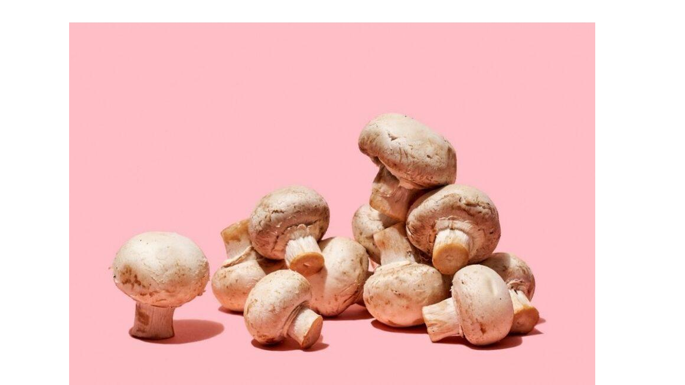
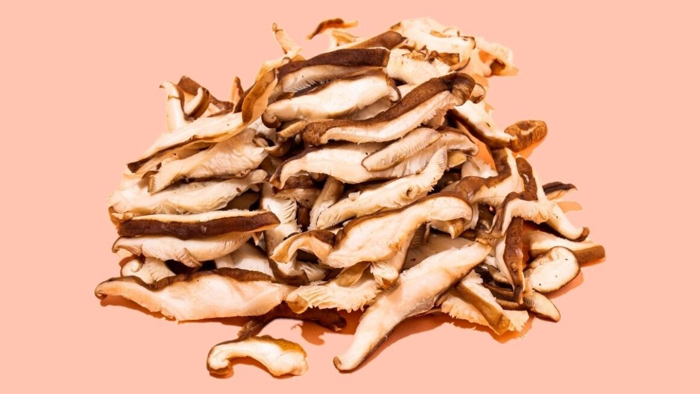
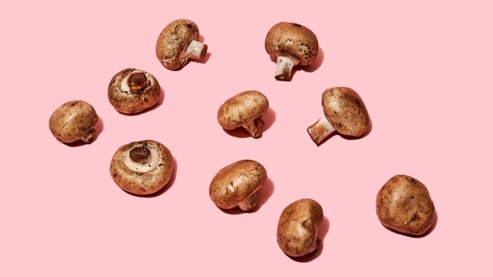
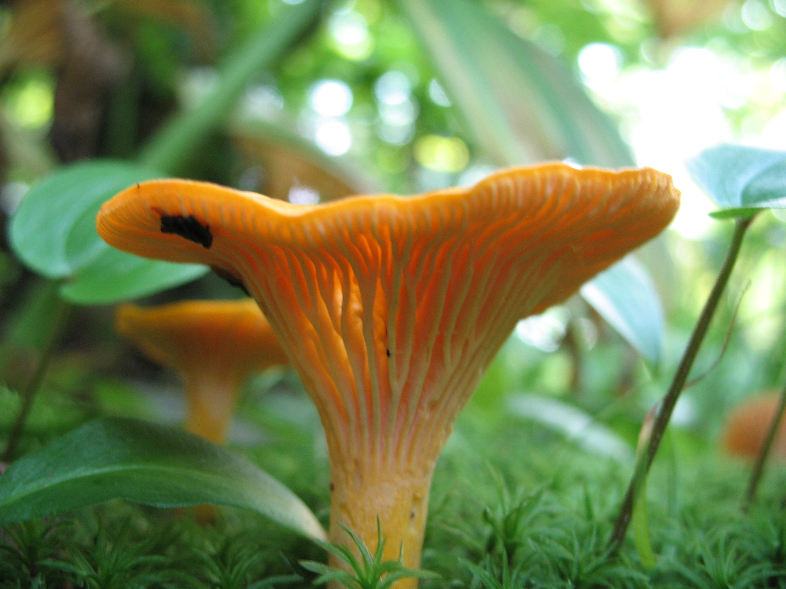

Cogumelos são pertencentes do Reino Fungi
Porque os cogumelos são tão interessantes?
Além de serem importatnes para o ecossistema, como agentes decompositores, são usados para medicina, culinária e uso recreativo.
A grande produção e variedade de substâncias permitem que os cogumelos se desenvolvam em ambientes onde a degradação é complexa, como tronco de árvores e até mesmo solos contaminados, mas preferem lugares úmidos e com sombras.
Inclusive, o maior ser vivo da terra é um cogumelo ou fungo chamado Fungo Humongous, e mede cerca de 3,8km

Confira abaixo receitas culinárias com cada cogumelo a seguir:

Champignon
Também conhecido como cogumelo champignon, uma das variedades mais cultivadas no mundo. Ele tem formato de botão, é bem clarinho e é conhecido pelo seu sabor suave e adocicado, inclusive sendo consumido cru.
Na cozinha brasileira, é muito comum encontrá-lo na versão em conserva, bastante usada para fazer estrogonofe. Além disso, fica uma delícia refogado, em saladas e também como recheio de tortas e lanches.
Shimeji
Tem um sabor mais acentuado, que combina com preparos refogados no azeite ou na manteiga. Aliás, ele é considerado por muitos a variedade mais saborosos, seja o shimeji branco ou shimeji preto. Fornece nutrientes como o fósforo, magnésio e potássio, além de ser uma ótima fonte de proteínas vegetais.

Shitake
Seja na versão desidratada ou na forma fresca, esse cogumelo é ideal para uso em sopas, molhos, assim como acompanhando massas. Originário do leste da Ásia, ele é considerado o rei dos cogumelos e contém 9 aminoácidos essenciais que ajudam no bom funcionamento do organismo e reforçam a imunidade.

Portobello
Possui sabor suave e uma textura mais parecida com a carne, por isso o cogumelo portobello é um ótimo ingrediente para pratos vegetarianos. Do ponto de vista nutricional, é rico em vitaminas B2 e B3. Já quando o assunto são os pratos, ele manda bem na versatilidade, pois fica incrível seja em preparos cozidos, refogados ou grelhados.
Eryngui
Uma variedade menos conhecida aqui no Brasil, mas que ganha apaixonados pelo sabor e pela textura, que é bem firminha. Por isso, o cogumelo eryngui lembra carnes brancas e é muito usado como substituto do frango em várias receitas. Se destaca por ter alto teor de vitaminas do complexo B, além de fornecer fósforo e magnésio.

Cantarelo
Ele é apreciado por causa de seu delicioso aroma frutado, que remete ao damasco. Ele é usado em diversas receitas culinárias, tais como sopas, molhos, risotos, guisados e até na preparação de sorvetes.